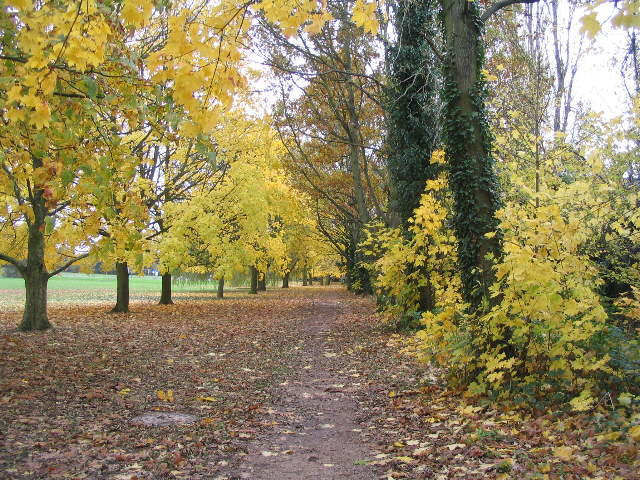
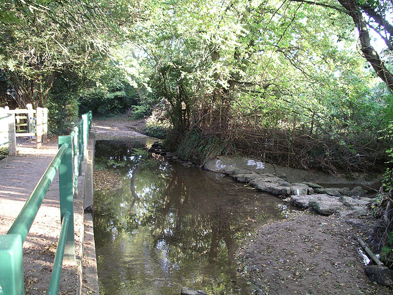
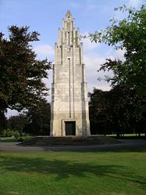
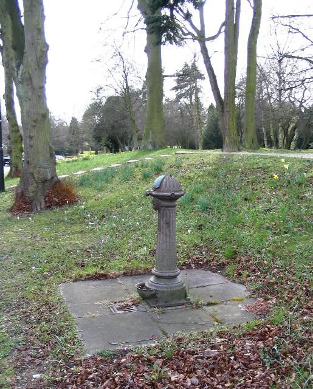

The Earlsdon 'Parish Boundary' walkView Earlsdon 'Parish Boundary' Walk in a larger map Earlsdon does not have parish council, of course, but this walk follows the old tradition of 'beating the bounds' and takes in a variety of green spaces around the edges of Earlsdon 'parish'. This is a very long circular walk. Beginning at the Earlsdon clock the route takes in the the ancient Hearsall Common and Canley Ford and the more modern War Memorial Park. The walk ends with the Edwardian developments of Top Park and Spencer Park before returning you to the centre of Earlsdon. Route: 1. We begin at the Earsldon Clock at the junction of Albany Road, Earlsdon Street and Earlsdon Avenue. The clock marks what many consider to be the heart of Earlsdon. The clock was erected in 1990 by local subscription and replaces a tram clock which stood on the roundabout until the 1980’s. 2. Proceed along Earlsdon Avenue North to Hearsall Common at the Old Clarence Inn. This pub was originally opened purely as an off-sales outlet by trick cyclist Sam Brown at the outbreak of the First World War. From the Clarence head diagonally across the common to the junction of Canley Road with Hearsall Common Road and cross straight ahead, making for the cycle speedway track. Carry on to the woodland, keeping the allotments and the old hedgerows on your right; as you enter the wood look for the pond restored by Wildlife Trust volunteers.  Veering to the right, continue through scrubland at the back of Whoberley Avenue making for the sharp corner at Guphill Avenue. Turn left here and pass through mature woodland parallel with Guphill Avenue (often very muddy); wildlife enthusiasts have placed numerous nesting boxes in the trees; look out for jays, sparrowhawks, owls, tree creepers and woodpeckers. The trail now crosses Broad Lane and continues alongside an old hedgerow to reach the dual carriageway at Tile Hill Lane. Cross over and continue along another hedgerow to Canley Road and follow the road over the railway, pausing to admire the allotment gardens. 3. Continue along Beechwood Avenue which bends round to the right and reach the sharp left turn. Walk ahead along Bates Road and at the bottom of the hill take to the narrow footpath cutting through Hearsall Golf Course. Soon we reach the site of the old Canley Milk Bar where milkshakes, ice creams and afternoon teas are sadly but a memory. At the lane turn right to the ford. This is a very ancient sunken lane worn down by centuries of carts. By the ford there are a set of steps on the left. These lead to the nature reserve created by Friends of Canley Ford. On the meadow is an impressive metal sculpture of a kestrel. Follow the path to a gate. 
4. On returning to the lane turn right and follow the lane to Kenilworth Road. Cross over Kenilworth Road and enter Coat of Arms Bridge Road. This area is what remains of Styvechale Common. At the junction of Green Lane continue along Coat of Arms Bridge Road and enter the War Memorial Park through a gate on the left.  5. There are numerous routes through the park. Pick your own and head for the large art deco memorial. From the memorial continue along the boulevard to the main gate at the junction of Kenilworth Road and Leamington Road. 6. Cross here and enter Top Green. This well kept Edwardian Park was where local residents would once promenade.  7. Continue through the Park to Spencer Road and turn left. Continue along Spencer Road to Spencer Park. The Park consists of a formal Edwardian park with tennis courts and bowling greens, together with a pavilion which is crying out for restoration. 8. On the opposite side of the road is an informal park surrounded by fine trees. Take the tree lined path around this section of the park turning left at the railway footbridge. Known locally as ‘Anarchy Bridge’ this has been a favourite haunt for graffiti artists for many decades. Finally the path will lead to back to Albany Road where you turn left again to bring you back to the Earlsdon Clock. |